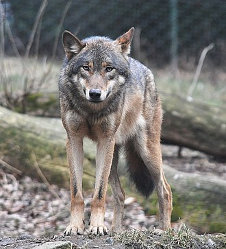

O lobo-cinzento é uma espécie de mamífero canídeo do gênero Canis. É conhecido por sua inteligência, organização em matilhas e grande capacidade de adaptação.
É considerado um sobrevivente da Era do Gelo, originário do Pleistoceno Superior, cerca de 300 mil anos atrás.
O lobo é o maior membro selvagem remanescente da família Canidae.
⬅ Voltar